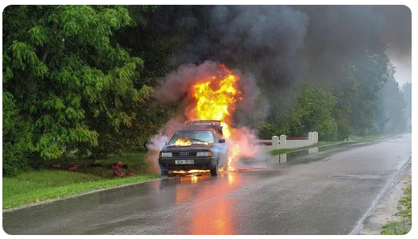
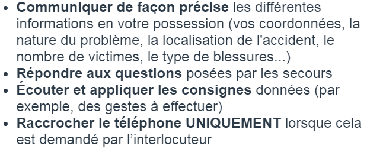

Un conducteur peut être amené à devoir gérer des situations compliquées, notamment en cas d’accident de la route.
Celui-ci peut être :
Il est donc important de savoir comment réagir en cas d’accident pour être en mesure d’apporter son aide aux victimes
Si le conducteur arrive sur les lieux d’un accident où les secours sont déjà présents,
il faut éviter de s’arrêter.
Si le conducteur arrive sur les lieux d’un accident qui vient de se produire,
il faut absolument s’arrêter et porter secours aux victimes. Dans le cas contraire,
cela est considéré comme un délit de non-assistance à personne en danger.
Dans tous les cas, il faut toujours appliquer les actions dans l’ordre suivant :
Suite à la protection de la zone de l’accident, il faut immédiatement alerter les secours.
Les secours à contacter dépendent de la nature de l’accident ainsi que de la localisation :
Afin que l’appel soit le plus efficace possible, il faut respecter les principes suivants :
Bon courage pour votre code !